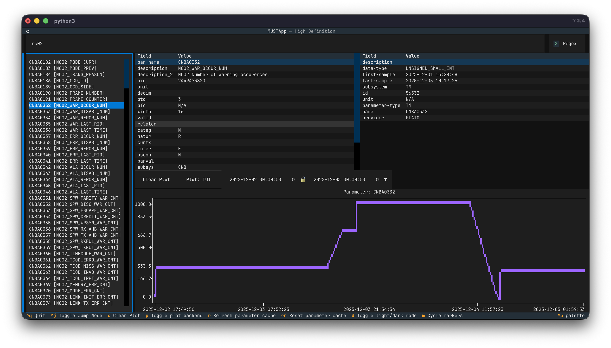

Using the TUI¶
The MUST TUI launches in a terminal and provides interactive access to telemetry parameters, their metadata, and time-series plots.

Layout Overview¶
The interface is divided into five main areas:
┌──────────────────────────────────────────────────────────┐
│ Header │
├──────────────────────────────────────────────────────────┤
│ Search Input [Regex] □ │
├─────────────────┬────────────────────────────────────────┤
│ │ Parameter Info │ Parameter Metadata │
│ Parameter List ├────────────────────────────────────── │
│ │ Plot Controls │
│ ├────────────────────────────────────────┤
│ │ Plot │
├─────────────────┴────────────────────────────────────────┤
│ Footer (key bindings) │
└──────────────────────────────────────────────────────────┘
Panels¶
Search Input¶
The search box at the top filters or navigates the parameter list as you type.
- Filter mode (default): The list is narrowed down to parameters whose name or description match the search text. By default the search text is treated as a regular expression. Uncheck the Regex checkbox to switch to fuzzy matching instead.
- Jump mode: The full parameter list is kept intact and the best fuzzy match is highlighted.
Toggle jump mode with
Ctrl+J.
The Regex checkbox (top-right of the search bar) switches between regex and fuzzy matching while in filter mode.
Parameter List¶
The left panel lists all parameters retrieved from the MUST server for the configured data provider. Each entry is shown as:
MIBNAME [Description]
Scroll through the list with the arrow keys or the mouse. Press Enter (or click) to select a parameter — this loads its MIB info, server metadata, and time-series data into the other panels.
Parameter Info¶
The upper-centre panel shows technical details read from the PCF file of the MIB for the selected parameter.
| Field | Description |
|---|---|
par_name |
MIB parameter name |
description |
Short mnemonic description |
description_2 |
Extended description |
pid |
On-board identifier of the telemetry parameter |
unit |
Engineering unit mnemonic |
decim |
Number of decimal places to be used for displaying real values of |
| this monitoring parameter | |
ptc |
Parameter Type Code |
pfc |
Parameter Format Code |
width |
'Padded' width of this parameter expressed in number of bits |
valid |
Name of the parameter to be used to determine the state validity of |
| the parameter specified in this record | |
related |
Name of monitoring parameter |
categ |
Calibration category: N=numeric, S=status, T=text |
natur |
Nature of the parameter: R=raw, D=dynamic OL, H=hardcoded, S=save synthetic, C=constant |
curtx |
Parameter calibration identification name |
inter |
Flag controlling extrapolation behavior |
uscon |
|
parval |
Raw value for a constant parameter |
subsys |
|
valpar |
Raw value for a validity parameter |
sptype |
|
corr |
Flag that controls correlation of absolute time parameters |
obtid |
OBT ID |
darc |
|
endian |
Endianness: 'B' or 'L' |
Parameter Metadata¶
The upper-right panel shows live metadata fetched from the MUST server for the selected parameter.
| Field | Description |
|---|---|
description |
Parameter mnemonic from the server |
data-type |
Data type (e.g. UNSIGNED_SMALL_INT) |
first-sample |
Timestamp of the earliest available sample |
last-sample |
Timestamp of the most recent available sample |
subsystem |
Subsystem (e.g. TM) |
id |
Internal parameter identifier |
unit |
Engineering unit |
parameter-type |
Parameter type |
name |
MIB name |
provider |
Data provider name |
Plot Controls¶
A toolbar between the info panels and the plot area:
| Control | Action |
|---|---|
| Clear Plot button | Remove all plotted traces |
| Plot: TUI / Plot: Matplotlib button | Toggle between the built-in TUI plot and an external Matplotlib window |
| DateTime range picker | Set the start and end time for data retrieval and the plot x-axis |
Changing the date-time range immediately updates the x-axis limits. Selecting a new parameter fetches and plots its data for the current time range.
Plot¶
The lower-right area renders a time-series plot of the selected parameter(s). Multiple parameters can be overlaid — each new selection adds a trace without clearing previous ones.
Use the Clear Plot button (or press c) to reset the plot.
The plot marker style can be cycled through four options (Braille, Standard Definition, High
Definition, Dot) with m.
Global Key Bindings¶
These bindings are available anywhere in the application:
| Key | Action |
|---|---|
Ctrl+J |
Toggle between Filter and Jump search mode |
c |
Clear all traces from the plot |
p |
Toggle plot backend between TUI (built-in) and Matplotlib |
r |
Soft-refresh the parameter cache (fetches from server, keeps SQLite cache) |
Ctrl+R |
Hard-reset the parameter cache (wipes SQLite cache, then re-fetches) |
d |
Toggle light / dark mode |
m |
Cycle plot marker style (Braille → SD → HD → Dot) |
Ctrl+Q |
Quit the application |
Startup Screens¶
Loading Screen¶
On startup the app shows a loading screen while it:
- Authenticates with the MUST server.
- Loads MIB parameter info from the bundled
pcf.dat. - Fetches the parameter catalog.
If authentication fails the app offers the choice to Abort or continue in offline mode (no server data, MIB browsing only).
Main Screen¶
After loading, the main screen is shown with the full parameter list. A background refresh of the parameter catalog runs automatically on first launch.
Plot Backends¶
TUI (default)¶
The built-in Textual plot renders directly in the terminal. No graphical session is required.
Matplotlib¶
Requires a graphical desktop session with a window manager. When enabled, an external
Matplotlib window opens alongside the terminal and stays in sync with the time range and
parameter selections. Switch back to the TUI backend with p or the Plot: TUI button.